林良富
我们该为学生准备什么样的数学学习，是每个数学老师经常追问的话题，每个人都会有不同的理解、不同的表述。一部分老师认为，教学内容是教材已经编排好的，教学目标是课程标准、教参已经规定了的，教学过程是执行教材；而我却一直在思考，怎样为学生准备“更好的数学”学习。当然，不同阶段、不同的人，对“更好的数学”会有不同的理解，但“更好的数学”应该有几个明确的标准：①有用的、人人都必须获得的基础数学，它能建立数学学习的平台，为后续学习、终身学习打下良好的基础；②形象、生动、富有挑战性的数学，它作为学生喜闻乐见的素材、活动场景，最容易被学生接受；③能引领学生去尝试、去经历、去发现的思维的数学，它作为教学推进的活动主体，凸显了过程性、结构性和数学化，能引领学生逼近数学的本质；④应用、创新的数学，它作为一个学习整体，与人的生活世界息息相关，与其他学科紧密联系，凸显了数学的现实性与再创造，是数学学习的最高追求。
教师要为学生提供“更好的数学”，还必须深刻认识数学教学的本质。首先，数学教学过程是师生共同发展的生命历程：通过师生的真情付出、激情演绎、有效互动，让学生在经历的过程中不仅获得知识与技能，形成方法和思想，同时也获得精神的生长；让教师在教学的过程中分享师生的成功、曲折、喜悦，同时获得专业上的成长与人生价值的提升，这正是数学的本质所在。其次，数学教学要充分尊重学生的数学现实（即已有的经验和知识）和认知心理的一般规律，通过有效素材的选择和合理活动的设计，让学生亲身经历对现实进行“数学化”的过程，使数学变成学生自己“再创造”的产物。这一过程正好吻合了弗赖登塔尔所认识的数学教育的主要特征——现实、数学化、再创造。再次，数学教学的本质也应该是以数学思维为核心的数学发生、发现、发展的过程教学，要在课堂中体现出“浓浓的数学味”，让学生学会数学地思维，形成以数学的视角去观察、分析、发现世界的意识。
具体到每一个年级、每一个单元、每一节课的教学，我们需要考虑的更多。例如，如何解读教材、解读学生、解读课堂；如何基于学生的现实基础、认知心理年龄特点、课标的要求制定凸显数学本质的三维学习目标；如何基于学生学习的需要科学选取典型的学习素材；如何遵循各类事物认识的一般规律与本课时知识的学科特点，设计更吻合学生学习路径的板块活动；如何设计和提出具有挑战性的关键问题，促使学生不断思考；如何为学生搭建活动的平台，并在活动中展示、提升学生的思维水平；如何保证学生拥有更充分的思考、交流的时间和空间；如何优化练习的设计，处理基础与创新的关系，等等。
为此，我在教学实践中积极尝试以下几点，通过优化学习目标、优化素材选择、优化活动和练习设计，引领学生自主探究、动手操作、合作交流，让学生学习“更好的数学”，取得了比较好的效果，现与大家一起分享。
荷兰数学家布鲁诺·恩斯特对数学哲学及数学教学的实验研究表明：数学教师对数学本质的有意识或下意识的理解，就像一只无形的手左右着教学的决策。新课程标准提出从知识与技能、过程与方法、情感态度与价值观三个维度来定位教学目标，这一指导思想是我们制定学段、学期、单元学习目标的基本准则，不能有所取舍。但在具体的课时教学目标制定过程中，需要考虑课程目标、单元目标、课时目标之间的关系，根据学生的阶段特点、学习起点、学习内容、后续学习的需要综合考虑，不一定要面面俱到，但在取舍过程中一定要凸显“数学的本质”，不能本末倒置，关注了形式却淡化了本质。比如计算教学，除了要落实计算技能，更要关注算理的理解与算法的迁移；数学广角的教学，除了要让学生学会解决问题的策略，更要关注策略背后隐含的数学思想方法与活动经验的积累；统计教学，除了要让学生学会图表的绘制、回答问题，更要关注学生统计意识、统计精神的培养；几何知识的教学，除了要让学生学会基本的周长、面积、体积的计算方法，更要关注学生直观思维、空间想象等能力的培养。
比如，人教版三年级下册“重叠问题”的教学目标定位有两种版本：一是教材考虑到集合思想的抽象性及三年级学生的认知水平，在目标定位上只要学生能够用自己的方法解决问题就可以了，把集合仅仅作为解决这类问题的一种手段。二是在分析了学生的现实基础、对比了多套教材、搜寻了大量资料、对学生进行了大量学情调研的基础上，将教学目标聚焦于数学的本质；让学生在亲历完整的集合思想方法形成的过程中，充分理解集合各部分的现实意义与关系，并利用集合思想解决生活中的问题。我在实践中，让学生充分经历集合从产生到完善的形成过程，取得了比较好的效果。
［片段写真］
（每一位同学课前都写好了两张卡片，卡片上写上自己的名字）
1.现场调查，引发问题
师：同学们，老师知道你们有很多兴趣爱好，有的同学喜欢电脑，有的同学喜欢美术，有的两样都喜欢。老师想进一步了解一下，请允许我对其中的两个小组进行调查，好吗？
（老师在黑板上贴出：喜欢电脑喜欢美术）
师：请你根据自己的兴趣爱好，把自己的名字贴在对应的位置上，如果两者都喜欢就两边都贴。
（学生开始贴名单）
师：我们一起来统计喜欢电脑和喜欢美术的人数。
生：喜欢电脑的有10人，喜欢美术的有8人，一共有18人。
生：我反对：喜欢电脑的有10人，喜欢美术的有8人，一共不是18人，被调查的两组只有12人。
生：有重复的。
师：（故作惊讶）是18人啊，我们只要数一数卡片张数就知道了！可被调查的学生是12人！问题究竟出在哪里呢？我们该怎么办呢？（学生争吵着：重复啦！重复啦！）
2.排列整理，引出集合图
师：谁有什么好办法，帮我们整理一下名单？
生：把相同的名字排在最前面，一一对应。
生：这样还是不清楚，我建议把重复的名字去掉。
生：我建议把重复的名字叠在一起，放在两个兴趣班的中间。
师：你们更喜欢哪一种排列方式？
（学生回答第3个学生的）
师：这样排列以后，怎样让人一眼就能看出中间的名字是两个都喜欢的？你有什么好办法？小组可以交流一下。
生：标上两个箭头。
生：中间再加上一句话：两个都喜欢的。
师：那喜欢电脑的人在哪里？请用手势指出来。喜欢美术的人在哪里？也请指出来。两个都喜欢的在哪里？（学生一起用手势圈，个别学生上台用手势指）
师：现在，你有没有更好的表示方法，让人把三部分人看得清清楚楚、明明白白呢？（学生思考）
师：请你动笔画一画（学生画简图）——汇报个性画图表征。
（师生一起引出规范的集合图）
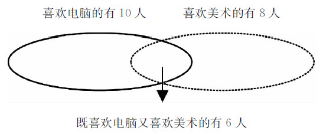
师：喜欢电脑的人在哪里，有几个人。喜欢美术的人在哪里，有几个人？既喜欢电脑又喜欢美术的人在哪里，有几个人？
师：把学生名单隐去，同桌互相说一说各部分的人在哪里，有几个人。（学生同桌互相说、指）
师：一共有多少人参加了本次调查？你会解答吗？
生：10+8-6=12（人）。
生：4+6+2=12（人）。
师：谁能说说自己是怎样想的？10、8、6分别表示什么？为什么减6？4、6、2又分别表示什么？为什么不用减6？
师：同桌说一说，只喜欢电脑的人在哪里？只喜欢美术的人在哪里？
……以上环节的尝试实践更坚定了我的信念：学习目标的定位，只要凸显“数学本质”，基于学生，基于科学，基于教材，基于生命课堂，就能指引我们不断前行，不断收获，不断逼近真实的数学世界。
当前教学实践中，有一部分老师在学习素材的选择上出现了两种偏差：一是拿来主义，不管是教材上的素材或资料还是从他人课堂中借鉴来的素材，一律拿来就用，没有选择意识、目标意识与科学组合意识；二是形式主义，素材的选择更多地关注了吸引学生和呈现的形式，而忽视了数学的本质与知识构建的需要，把数学课上成了欣赏课、演示课、实验课、手工课、说话课，缺少对素材结构的思考，缺少数学味。我在学习素材的选取过程中，遵循了以下原则：（1）素材的趣味性与适合性，小学数学学习的素材尽量生动、活泼一些，尽量减少枯燥的学习素材，选取最适合学生的素材；（2）素材的数学味，素材的选择要有利于学生学习、学生交流、学生思维、学生发现、学生质疑、学生探究；（3）素材的结构性，数学材料结构性特点是我们非常需要关注的，结构化的素材吻合了学生的认知结构与最佳探究路径，蕴涵了数学的本质方法或思想。
比如在执教“用字母表示数”一课时，我在素材选择上力求通过自己的改造，凸显浓浓的数学味，让素材既具有形象、生动的趣味特点，又有良好的思维结构的数学特点；通过具有挑战性的问题，让学生的思维处于认知的最近发展区，进一步激发学生探究的欲望。
［片段写真］
（用多媒体形式出示《数青蛙》儿歌）
一只青蛙一张嘴，两只眼睛四条腿；
两只青蛙两张嘴，四只眼睛八条腿；
三只青蛙三张嘴，六只眼睛十二条腿；
……
（学生摇头晃脑地读个不停）
师：同学们个个都是编儿歌高手，没有文字还可以继续往下读。
生：我发现了规律，下一句和上一句增加了“一只青蛙一张嘴，两只眼睛四条腿”。
师：噢，同学们用数学的眼光发现了这首儿歌中还有数学规律！那我们用十只青蛙来编一句儿歌。
生：十只青蛙十张嘴，二十只眼睛四十条腿。
师：那我们再编一句一百只青蛙的儿歌。
生：一百只青蛙一百张嘴，两百只眼睛四百条腿。
师：你们发现了一种什么样的规律？
（学生思考，之后小组交流）
生：青蛙的只数和嘴的张数一样，眼睛是青蛙只数的2倍，腿是青蛙只数的4倍。
师：根据你发现的规律，这样的儿歌编得完、读得完吗？（学生答：永远也编不完、读不完）
师：你们能不能运用这节课学会的本领，想个办法把这首儿歌读完？请你试着用含有字母的式子编一句儿歌，编完后在小组内交流。
生：无数只青蛙无数张嘴，无数只眼睛无数条腿。
生：a只青蛙a张嘴，a只眼睛a条腿。
生：x只青蛙x张嘴，2x只眼睛4x条腿。
生：a只青蛙a张嘴，a×2只眼睛a×4条腿。
生：a只青蛙a张嘴，b只眼睛c条腿。
生：□只青蛙□张嘴，□×2只眼睛□×4条腿。
生：n只青蛙n张嘴，n·2只眼睛n·4条腿。
师：同学们真厉害，想出了这么多办法编写这首儿歌。大家觉得哪些编法比较接近，先归归类，再看看哪种编法既简洁又合理。（学生辨析、说理，教师追问、质疑、点拨）
……
以上片段凸显了素材的趣味性、形象性、生动性。通过教师的问题指引，凸显了儿歌的结构性特点，引导学生从小数目到大数目迁移，再通过变量统领这份结构性素材，凸显了素材的思维性，又让学生一直保持强烈的探究欲望。
当前的很多数学课堂中，呈现的教学过程是线状的路线，缺少一种板块的结构活动设计，教学的流程比较单一，不具备课堂的生成性和可调整性。我在教学流程设计中，打破了线状的设计理念，采用板块活动的设计。所谓“板块活动”设计，就是把一节课的目标进行分解，以一个个既有联系又相对独立的活动板块构成一节课的教学流程。每一个活动板块都有自己明确的活动目标与基本流程，同时一个个独立的板块又组成一个紧密相连的大流程，大流程努力吻合学生的最佳学习路径，遵循科学的认知规律。每一个活动板块相对独立，可以在课堂中根据学生的现实状态进行序的调整、量的删减、时间的调控，从而构建网状的、可调节的、非线性的动态课堂。板块活动的设计是在教学目标、学习素材优化的基础上，科学研究、分析学生学习路径、教材编排路径、知识形成的一般规律之后，分解教学目标，设计几个活动的学习板块，以活动为载体，以问题为核心，让学生亲身经历对“现实”进行“数学化”的过程。
比如几何知识的学习，需要体现做几何的过程：因为几何表象的深度构建需要通过大量的图式表象积累与直观感知积累。我在教学实践中积极尝试在板块活动中、在思辨中“做几何”，需要学生亲自体验的知识，创造一切条件搭建“做几何”的活动平台，让学生在“做几何”的活动过程中充分体验、感悟、交流，充分表达与表征，让每一位学生在“做几何”的过程中获得立体的体验、深刻的感悟、清晰的表象，为知识抽象概括奠基。
在执教“圆柱的认识”一课时，我设计了四个板块活动：课始的想象、演示活动（从平面几何到立体几何），课中的操作活动（从论证几何到实证几何），课中的成果发布活动（从直观认识到抽象认知），课后组装圆柱活动（从计算几何到推理几何）。通过板块活动的深度体验，促进学生对圆柱的更深层次的认识，构建更立体的表象，进而抽象出圆柱的本质特征。
［片段写真］
1.想象、演示活动（老师点击大屏幕，出现两个长方形，如下图）
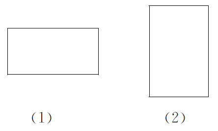
师：请同学们猜一猜，（1）号长方形向后平行移动后，会形成一个什么形体？（2）号长方形，以一条宽所在的直线为轴，旋转一周后，会形成一个什么形体？
生：（学生展开想象后）长方体，圆柱体。（老师用多媒体动态演示）
师：举例说说生活中哪些物体的形状是圆柱体。（学生回答）
2.小组体验、操作活动
师：老师给每个小组准备了一个学习包，请同学们打开学习包，看看里面有些什么材料。
生：椰子汁罐、茶叶罐、纸水杯、纸做圆柱模型、一个装有纸片的信封……
师：请同学们根据这些材料，采用看一看、摸一摸、剪一剪、拼一拼等方法，当然也可以采用自己喜欢的方法，先自主后合作开展研究，看看同学们能发现圆柱的哪些特征。
（留给学生足够的时间研究，老师参与讨论并指导）
（学生有序体验：看一看、摸一摸、剪一剪、拼一拼，将自己的感受、发现在组内交流）
3.“研究成果发布会”——在交流中确认、辨析、提升认知
师：刚才老师参与了同学们的研究讨论，知道大家有了很多研究成果。下面我们举行一次圆柱研究成果发布会。为了开好这次发布会，我有两个建议：发言介绍的同学可以在自己的座位上，更欢迎你到台前来，发言介绍时要说说你发现了圆柱的哪些特征，是怎样发现的；未发言的同学不仅要认真听，还要跟着介绍的学生一起看、摸、剪、拼等，当然，你可以补充，也可以向发言人质疑。
生：（上台）我动手以后发现，圆柱侧面展开是一个长方形，还发现圆柱的两头面积相等。
生：（上台并演示）我发现圆柱侧面展开还可以是一个平行四边形，而且还有可能是一个正方形。
生：我发现杯子侧面展开的长方形的长是底面的圆周长。
生：我有意见，纸杯不是圆柱体，它剪开后不像一个梯形，更不是长方形。（举杯演示）
生：我把杯子修整过了，已经成了一个圆柱体。（也是举杯演示）（众人大笑）
师：这个同学很有创造力，我们给他一个欣赏的眼神。
生：如果要把一张梯形的纸片卷成一个圆筒，有些地方就要折叠起来。
师：折叠后的梯形实际上已变成了什么形？
生：长方形。
生：我发现圆柱体上下两个面的形状是一样的。
师：圆柱的上下两个面叫什么面？有什么特点？
生：叫底面，两个底面面积相等，都是圆形。
师：那圆柱体的侧面有几个？
生：圆柱体的侧面有无数个。
生：我认为圆柱体的侧面只有一个，因为它展开了以后是一个长方形，没有无数个侧面的说法。
生：我是说没有展开以前的圆柱体的侧面有无数个。
师：你怎么来说明白自己的观点？
生：（上台示范）我沿着圆柱一侧往下摸，是一个面，再移过去从上往下摸又是一个面，这样绕一圈可以摸出无数个面。（全场大笑）
师：现在同学们赞成哪一种说法？
生：圆柱的侧面有无数个。
师：看来同学们还很有主见。像××同学的摸法，这侧面还可以摸出无数个，那大家再摸一摸感觉一下，这个圆柱的侧面与底面有什么不一样。
生：圆柱的两个底面是平面，而侧面是一个弯曲的面。
师：这个弯曲的面叫曲面，所以我们一般说圆柱有一个侧面，这个侧面是曲面。请同学们再以不同的方式摸一摸。
师：大家已经知道，圆柱的侧面展开是一个长方形，也有可能是平行四边形，那怎样展开会是一个长方形或者平行四边形呢？
生：垂直于底面展开的是长方形，斜着展开的是平行四边形。
师：这个展开的长方形和圆柱之间有什么关系？
生：长方形的宽就是圆柱的高。
生：长方形的长是圆柱底面的周长。
师：请同学们摸一摸、比一比，圆柱底面的周长、高与展开的长方形是否存在这种关系。（学生活动）
生：椰子汁罐的包装纸要去掉粘合部分，这样长方形包装纸的长才等于圆柱底面周长。
师：观察得真仔细！在实际包装中会出现一个接口，去掉接口的重叠部分，余下的长方形的长等于圆柱的底面周长。为了加深印象，同学们还可以再看一下多媒体演示。
在本环节中，教师让学生“做几何”的板块活动贯穿始终：从想象演示——自由研究、小组合作研究——伴随“研究成果发布会”的推进进行微观的验证研究等活动。多元多层的活动，凸显了学生的直观表象、个性表达与表征、几何的本质特征三者间的和谐统一。教师在板块设计中凸显了每一板块的目标细化，有明确的操作要求与思辨问题，在活动中凸显了数学化的过程，让想象——操作——表象——结构化认知的形成过程得到充分展现。
课堂练习，是学生获取数学知识的有效手段，是课堂教学必不可少的环节。在家常课上，教师十分注重模仿性练习和变式应用性练习的设计，设计过程中更多地关注练习形式的多样性、练习的层次性、知识的变式与运用。这样的设计可以有效促进学生对所学知识的理解、巩固和基本技能的形成，是落实基础目标的有效举措。而数学的学习除了落实基础目标，还要兼顾学生的长远发展与创造力培养。如何在保证学生扎实基础训练的前提下优化课堂练习的设计功能，在“发展性练习”和“创新性练习”设计上有所突破，是我一直在思考的问题。
我们可以在保证学生基础性和变式性练习的基础上，适时设计一两道有利于激发学生潜能、促进学生认知结构变化的“创新性练习”。在“创新性练习”的设计过程中，我们可以从以下角度去思考：（1）具有开放、探究功能的练习，主要是激发学生的潜能、调用学生已有的知识、促进知识形成网络；（2）具有延伸、发展功能的练习，主要指向孩子学习的未来节点，为进一步学习指明方向，激发学生自主探究的热情；（3）具有“再创造功能的综合性练习”，可以把学生从新课中学习的一个点引领到知识整体结构的三维空间里，打破学生原有的认知结构，凸显知识的“再创造”。
比如，在执教三年级下册“重叠问题”时，我最后设计了一道动态整体体验“集合”的练习，把“重叠问题”新课中学习的一个点扩展到“集合”思想的三维空间，让集合的直观图像统领学生已有的认识（两个数相加、加减混合），打破学生原有的认知结构，重新构建认知网络，凸显知识的“再创造”。
［片段写真］
师：同学们对“韦恩图”已经有了初步的了解，并能运用“韦恩图”解决实际问题。下面，请你展开想象，动笔画一画，下面的算式可能是怎样一幅图。
3+54+6-2
（学生思考、画图）
生：3+5我是这样表示的：
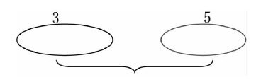
生：4+6-2我是这样表示的：
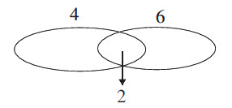
师：看着这两幅图，你想说些什么？
生：原来一年级学的加法也可以用韦恩图来表示啊！
生：韦恩图，你真伟大，法力无边！
师：只要敢于想象，大胆画图，你还会有更惊奇的发现。还想挑战吗？（出示：三年级某班参加竞赛，其中参加数学竞赛的有8人，参加作文竞赛的有12人）请问，这个班参加数学、作文竞赛的总人数可能是多少人？
（学生思考——动笔画图——思考——画图——脸上露出笑容）
（展示学生的算式与图示）
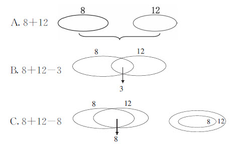
师：请你展开想象，从8+12的两个分开的集合圈到8+12-8的包含集合圈，会是怎样一幅动态的画面？（学生闭眼思考，大胆想象）
（老师以课件展示运动中的图示：从并集——交集——补集，纠正8+12-8的图示）
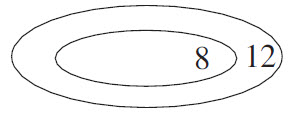
以上片段中创新性练习的设计，把知识从一个点引向了更广阔的三维空间。在练习的探究过程中，打破了学生原有的认知结构，走出了练习设计的瓶颈，从基础走向了数学学习的最高领域——“再创造”。
我们从目标的定位、素材的选择、板块活动的流程设计、创新性练习的优化设计四个维度进行了大胆的实践与尝试，提出了自己的设计准则，分享了课堂的动态生成、课堂的精彩，促进了学生的深度感悟与再创造，促进了我对“更好的数学”的思考与研究。我们只有真正读懂生命、读懂教育、读懂学生、读懂教材、读懂课堂，才有可能为孩子提供“更好的数学”。面对孩子们的需要，让我们一起行动！
课堂智慧
优化“板块活动”设计构建“更好的数学”
——人教版五年级下册“轴对称”课堂教学案例
人教版五年级下册“轴对称”是学生在二年级初步认识对称的基础上，进一步探索图形成轴对称的性质。在二年级时，学生就已经认识了日常生活中的对称现象，有了轴对称图形的概念，并能画出一个轴对称图形的对称轴和它的另一半。但学生的认知还停留在直观感性阶段，主要借助“对折完全重合”这一动作思维方式来理解对称，还不能上升到从“点的对应”这一理性思维角度理解。本课时要进一步认识两个图形成轴对称的概念，探索图形成轴对称的特征和性质，并学习在方格纸上画出一个图形的轴对称图形。我在教学之前重点思考了以下问题：（1）采用何种方式才能有效唤醒学生原有的认知，丰富学生的表象，促进学生的语言表达，同时激发学生进一步探究的欲望？（2）如何有效突破“对应点所连的线段被对称轴垂直平分”这一认知难点，并把握好度？（3）如何落实“进一步增强学生的空间观念和发现美、创造美的能力，激发创造美的热情”的目标等？
当我翻开教材，研究教学思路时，首先就被主题图中的对称图案深深吸引，从战国铜镜、唐代花鸟纹锦到瓷器、花边、剪纸等，无不闪耀着中国传统元素的魅力，这些素材的有效利用与整合，是我设计之初思考的第一个问题。本节课的重点与难点如何突破，设计怎样的活动体验最利于学生突破难点、理解“对应点所连的线段被对称轴垂直平分”这一特性，又不能太深，这是我设计之初思考的第二个问题。带着这份思考，遵循五年级学生的思维特点和认知规律，从学生已有的知识基础和生活经验出发，沿用教材编排的基本路径，兼顾学生学习的重难点与有效学习路径，凸显知识形成的过程与学生的深度体验，我大胆设计了五大核心板块活动：“汉字中的轴对称”、“画龙点睛”、“数格子”、“摆小草”和“设计轴对称美图”等。
在本案例中，我以学生“做数学”、板块活动为依托，充分挖掘每份素材的最大利用价值。在素材选择上兼顾科学性、趣味性相结合的原则，并对相关素材进行整合，作为活动板块进行推进；每一个板块的活动设计都有明确的目的性和层次性，充分尊重学生原有的认知与学习心理。
（1）“汉字中的轴对称”：由于学生之前的认知大都停留在感性经验阶段，加上二年级到五年级的时间跨度很长，如何有效唤醒学生原有的认知是教学成功的重要因素。在本设计中，我想到了利用“中国传统元素”——汉字作为学习素材，并巧妙地将教师姓名“林良富”融入教学。首先，林老师的姓名中的“林”字是对称的，而“富”字将“、”调整后也是对称的，这样的素材本身就是充满生命力的。其次，教师将自己的姓名作为学生的学习素材这一行为本身，无形之中就打破了师生之间的心理隔阂，激活了学生的学习兴趣，学生很自然地主动投入学习中。第三，教师在呈现手写和美术字“林”的同时，还提供纸剪的“林”字，在唤醒旧知的同时，更巧妙地为学生的语言表达提供了帮助，无形中还让学生体验了汉字之美。
（2）“画龙点睛”：这一充满中国传统韵味的活动，激活了学生的探究欲望。同时，该活动又将本课时的经典学习难点巧妙地包融其中，使学生在“点睛”活动中自然悟出“两只眼睛到对称轴的距离要相等”，甚至有学生提出“两只眼睛要在同一水平线上”，这样的思维水平实际上已经离“垂直平分”无限接近了。其实，难点这么轻松、有效突破的根本原因，就在于“画龙点睛”这一充满中国元素的经典学习素材的有效利用，在使用过程中凸显了趣味性、活动性和思辨性。
（3）“数格子”：在解读教材、把握学生认知特点的基础上，我们把书本中的例1分行分解，设计成两个层次的独立活动板块——数格子和摆小草。学生经历了“整体感知、动作认知（折叠、画对称轴）、体验感知（点睛）”等活动之后，找对应点、数格子就顺理成章了。延续前面练习中的松树图，衬托上方格，自然就把数格子凸显出来了。通过验证、数数等活动，把学生的认知引入更高层次——理解对称的性质，为后续八年级的学习奠定了直观感知的认识基础。
（4）“摆小草”：很多老师在课堂实践中，对摆小草的认识比较浅显，对学生“关于图形的轴对称”学习困难预估得过于乐观。在充分的学情调查与研讨基础上，我们对“摆小草”活动进行了单列，分层突破本堂课的最大学习难点（方向相反、对应点到对称轴的距离相等）：先让学生想象，再出示三棵小草供学生选择，突出方向相反这一特性，然后运用对称的性质确定小草的位置，让学生对图形的对称有一个深刻的认识与整体的判别策略。
（5）“设计轴对称美图”：在学生完成基本练习（一次判断、两次画图）之后，为了让学生学习“更好的数学”，关注学生发现美、欣赏美以及创造美等能力的培养，我们安排了“设计轴对称美图”这一活动。在课结束之前，教师让学生欣赏书法剪纸，又带领学生走进一个“中国传统元素”渗透对称美的世界，在加深学生对中国传统元素之美的认识的同时，激发了学生创造美的热情，使课的境界进一步升华。
我在不同的城市、不同的学校实践，通过五大活动板块的教学，学生的知识、技能、审美、思维等各个方面都获得了长足的进步，教师在课堂上和孩子们一起享受“更好的数学”学习带来的快乐，享受愉悦的生命历程。详细教学过程如下：
师：今天这节课，林老师要考考大家有没有带着数学的眼光来上课。（出示纸剪的“林”字）这个“林”字和黑板上的“林”字有什么不一样的地方？
生：黑板上的“林”字不对称，林老师手中的“林”字是对称的。
师：为什么说它是对称的呢？
生：因为它是由两个“木”字组成的。
生：因为它对折以后两边完全重合。（学生演示对折、重合）
（老师板书：对折——两边完全重合轴对称图形）
师：中间这条折痕叫什么？（继续板书：对称轴）
师：（点击课件出示美术字“林良富”）你还有什么发现？
（学生很开心地发现：“林”字就是轴对称图形）
生：“富”字也是轴对称图形。
生：（很多学生反对）不是！“富”字上面那一点是斜的，不是轴对称图形，除非把那个点摆正。
师：“富”字现在还不是轴对称图形，你能把它变一变，让它变成轴对称图形吗？
（师生一起演示，把“富”字上面的一点慢慢变正，“富”就成了轴对称图形）
师：你能上来指一下，现在这个“富”字的对称轴吗？
师：同学们找一下，在你们的名字中有没有轴对称的字？（学生举例）
师：生活中还有哪些图案是轴对称图形？（学生举例）
师：老师也收集了四幅美丽的图案（见下页），请你画出它们的对称轴。（见练习纸第一题）
（学生独立画图，个别学生汇报1、2、4幅图的对称轴画法，并说明理由）
（争论的焦点落在了“龙头”图案上，自然引出下一环节）
师：（用课件出示独眼龙图）这个龙头图案是对称的吗？
生：不是，它只有一只眼睛里有眼珠。
师：确实，这个龙头图案，同学们发现是一只独眼龙，下面我们就来做一次“画龙点睛”的游戏，让它变成轴对称图形。为了方便点睛，老师先画好对称轴。（课件演示）
师：请同学们先想一想，同桌商量一下该怎么点睛。
（指名上台进行“点睛”活动）
（第一个学生画了之后，课件验证发现有偏差）
（第二个学生上台“点睛”）
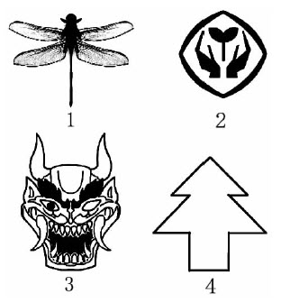
师：你是怎么想的？
生：最好用尺子来量一量。
师：为什么想到用尺子来量一量？
生：如果差一点怎么办？
师：你能用数学的语言来说一说吗？
生：用尺子量可以保证两只眼睛到对称轴的距离相等。
生：两只眼睛要平行。
师：“平行”是什么意思？
生：（解释不清）……就是不能一只高、一只低。
师：是的，两只眼睛应该在同一水平线上，而且到对称轴的距离要相等。
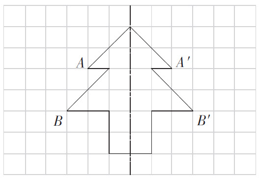
（老师板书：同一水平线，到对称轴的距离相等）
师：（课件点击已经画好对称轴的松树图，下面衬托上方格，追问）你有什么办法检验你画的对称轴是对的？
生：对折，看是否重叠。
生：这个很难对折，除非剪下来，可以数格子，看两边是否一样大小。
生：数点到点的格子数，比如……（学生上台指点到点的格子数）
师：标上A和对应点A′，谁说一说A到对称轴、A′到对称轴的距离是几个小格子？
（学生上台指，所有学生数练习纸上的格子）
师：老师标出其中一个点B，请你找出对应的点B′，并数出两个点到对称轴的格子数。
（学生开始找——数——交流）
师：（点击：在对称轴左下角补充一棵小草）请你想象一下，对称轴的右边会有一棵怎样的小草与它相对应？（学生想象、思考）
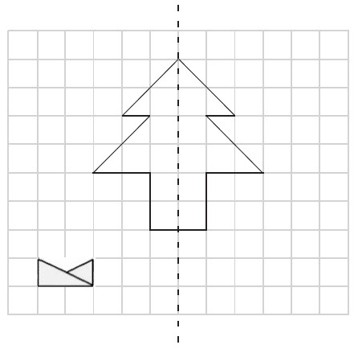
师：这里有三棵小草，你认为选择哪一棵更合适，理由是什么？
生：我选择小草C，因为对称图形两边必须一模一样，这样才能重合。
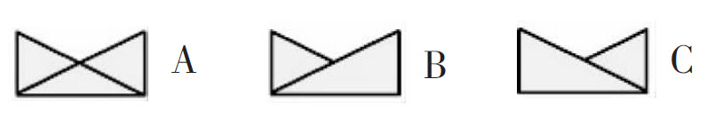
生：我选择小草B，因为对称图形对应点到对称轴距离相等，选C没办法重叠。
师：你们谁愿意上来把小草摆摆看，究竟哪一棵适合？（学生移动小草，学生做评判员，统一认识选B）
师：A为什么不行？（生争吵着说：变形了、多了一条边）
师：这棵小草放在什么位置比较合适，理由是什么？
（学生摆小草，说理由）
师：说一说形成轴对称图形要具备哪些条件。（图形相反、对应点距离相等）
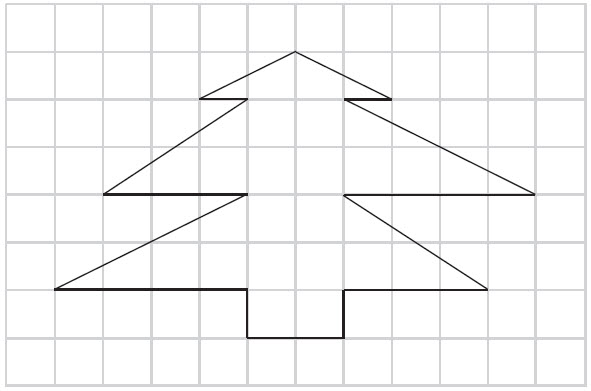
师：请你判断方格中的图形是不是轴对称图形，理由是什么？
师：请在方格中画出小红旗的轴对称图案，并说一说你是怎样画的。（见右图）
师：画出房子的另一半（书本第4页）。先思考：先画什么，再画什么，每条线段画多长？
师：（全课小结）今天有什么新的收获？
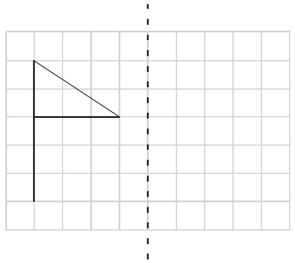
师：要成为优秀的设计师不仅要会画，还要有充分的想象力，老师考考你们如何？老师将一张纸对折对折再对折，然后在上面写一个木，剪下来之后结果会怎样？
生：6个“木”字。
生：不对，应该是8个“木”字。
生：也可以说是4个“林”字。
师：（演示课前准备的一串剪好的8个“木”字）观察一下，还像什么？
生：像是8个人手拉手。
生：像是在跳天鹅舞！
师：你真有想象力！这样的图案美不美？
生：美！
师：（边说边展示）老师这里还有一串用篆书“木”字剪出的花边。
全班学生：哇！
师：（边说边呈现一些图片）其实，中国五千年历史中积淀的很多传统元素身上都有轴对称的影子，从中国书法、篆刻印章、青铜器、鼎、中国结、建筑、华表、京戏脸谱、剪纸、风筝到乐器、织绣等，无不闪现着中华民族对对称美的理解和追求。下面，就请同学们发挥想象力，运用对称的知识，画一画，剪一剪，创造出最美的图案。
（整理者：杨开远）